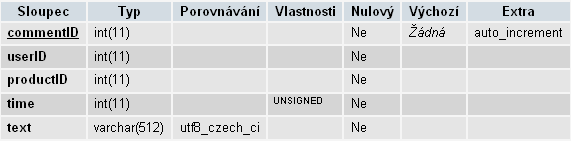

Použité jazyky a knihovny
Server v PHP 5, databáze MySQL 5, u klienta HTML 4 (strict), CSS 2, javascript 1.8.
Stránky byly testovány na nejnovějších verzích pěti hlavních internetových prohlížečů (IE, FF, Chrome, Safari, Opera - podle Net Market Share).
Jako server jsem používal Apache 2.2, vývojové prostředí NetBeans IDE 6 s pluginem PHP 1.6, pro ladění PHP jeho rozšíření xdebug 2 a pro ladění css a javascriptu FireFox plugin Firebug 1.5, pro administraci MySQL databáze phpMyAdmin 3.2., dále se používá javascriptová knihovna jQuery 1.4 s několika pluginy. Dokumentace je vytvořena pomocí doxygen a jsdoc (nejradši bych použil perl skript js2doxy, aby mohla celá dokumentace být pohromadě, ale tento skript bohužel nezvládá statické metody).
Rozložení stránky
Celá stránka je rozdělená na titulek, levé menu, horní menu, pravé menu a vnitřní stránku, na které se zobrazují data, které uživatel chtěl. V levém menu se zobrazují kategorie produktů. Při kliknutí na kategorii v levém menu se zobrazí všechny její přímé podkategorie a ve vnitřní stránce se zobrazí všechny položky této a všech nižších kategorií. V pravém menu se zobrazují určité nejzajímavější položky, a to nejlepší, podobné a spojené položky. V horním menu jsou odkazy na Kontakty, Zákaznickou podporu,... V titulku je logo, formulář pro přihlašovaní uživatelů a odkaz na nákupní košík.
Manageři
Manager a všichni jeho potomci se starají o přípravu všech proměnných a objektů, které bude stránka potřebovat, pracují s databazí a s BlackBox. Proto skript, který přímo zobrazuje nějakou stránku (skripty v nejvyšší úrovni struktury, v adresáři shop/), jako první konstruuje svého managera a pak už jen využívá jeho metody a proměnné. Díky hierarchii managerů je zajištěno, že kód je pouze na jednom místě a volá se, jen když je to nutné. Každý manager má své virtuální funkce pro vypsání levého a pravého menu, protože tyto menu bývají na každé stránce jiné.
Seznam stránek a jejich manažerů:
Od těchto odkazů je asi nejlepší začít procházet dokumentaci (po přečtení hlavní stránky).
Získání produktů
Všechny produkty a jejich atributy byly vygenerovány - pomocí skriptů v adresáří php/generating/. Používají reálné hodnoty a obrázky, ale náhodně promíchané. Generování má tu velkou nevýhodu, že uživatelé se nad daty nebudou moci chovat úplně přirozeně (až se bude testovat získávání implicitních hodnocení). Bohužel reálné produkty nebylo možné ve větším počtu nikde získat.
V tomto adresáři jsou i skripty pro generování náhodného chování, které je ale bohužel velmi nerealistické, a proto je lepší tyto skripty raději nepoužívat. Ale skript pro generování náhodných objednávek v tuto chvíli použit je, kvůli tomu aby třídy LinkedItems a SimilarItems dávaly nějaké výsledky (viz. dále).
Preference
Preference nad produkty:
-
Nejlepší produkty setřízené podle popularity (třída TopItems).
-
Použití v catalog.php pro řazení podle popularity a v pravém menu pro zobrazení nejlepších položek dané kategorie .
-
Spojené produkty s nějakým produktem (třída LinkedItems).
-
Použití v pravém menu pro zobrazení položek spojených s položkou právě vloženou do košíku (itemAdded.php) nebo s celým košíkem (cart.php).
-
Spojené produkty s nějakým produktem jsou ty produkty, které s tímto produktem byly objednány dohromady v jedné objednávce. Čím víckrát se tak stalo, tím lépe.
-
Podobné produkty nějakého produktu (třída SimilarItems).
-
Použití v pravém menu pro zobrazení položek podobných s položkou právě prohlíženou (item.php).
-
Dva produkty si jsou podobné, pokud existuje co nejvíc objednávek, kde by mohly být tyto produkty zaměněny mezi sebou. To znamená, že oba dva mají co nejvíc společných spojených produktů a zároveň nejsou dohromady v jedné objednávce. (např. A a B si jsou podobné, pokud jsou objednávky A + C dohromady a B + C dohromady, zároveň nejsou objednávky A + B dohromady).
Všechny zobrazené produkty jsou vždy setřízené nejdříve podle hodnocení aktuálně přihlášeného uživatele a pak podle průměrného hodnocení všech uživatelů dohromady (včetně hodnocení, které zanechali uživatelé, kteří nebyli přihlášení).
Další použité preference:
-
Třídění položek v catalog.php. (pro každou kategorii zboží zvlášť)
-
Počet položek na stránce v catalog.php. (pro každou kategorii zboží zvlášť)
-
Nejoblíbenější způsob dopravy a platby za zboží v cart.php.
-
Další je možné snadno přídávat.
Objekty těchto preferencí se vracejí podle pořadí:
-
Přímo zadaná hodnota konkrétního uživatele pro konkrétní kategorii.
-
Nejčastěji zadaná hodnota konkrétního uživatele pro všechny kategorie.
-
Nejčastěji zadaná hodnota mezi všemi uživateli pro konkrétní kategorii.
-
Nejčastěji zadaná hodnota mezi všemi uživateli pro všechny kategorie.
Hodnoty těchto preferencí jsou uložené v databázi, po prvním použití se zkopírují do proměnné session, tím se sníží počet dotazů do databáze. Hodnoty se ukládají vždy, když je uživatel sám vybere (např. když zvolí řazení produktů v katalogu). Preference nepřihlášeného uživatele se do databáze neukládají, takže pro kroky 1) a 2) se používá pouze session.
Rozhraní přístupu k preferencím
Každá třída preference dědí od objektu Preference, který obsahuje abstraktní metody setPreference a getPreference. Nejdůležitější ze všech potomků je třída BlackBox, která si udržuje odkazy na ostatní objekty preferencí a zprostředkovává rozhraní pro volání jejich metod set a getPreference, takže aplikace komunikuje pouze s touto BlackBox, ostatní objekty jí jsou skryté. V konstruktoru každého potomka Preference je pouze ID aktuálního uživatele, ostatní parametry se předávají v argumentech metod set a getPreference.
Například pokud chci dostat nejlepší položky:
$bb = new
BlackBox($userID);
$bb->getPreference("TopItems", parametry...);
BlackBox pak vytvoří objekt
TopItems, zavolá jeho funkci getPreference s danými parametry a vrátí její výsledek.
Získávání chování nad produkty
Na jednotlivých produktech je sledováno toto chování:
-
Počet přístupů
-
Doba zobrazení stránky
-
Množství scrollování
-
Množství kliknutí
-
Počet objednávek, ve kterých produkt je
-
Dále je možné produkty hodnotit explicitně (hvězdičkami).
-
Počet hvězdiček není nijak omezen, je zvoleno 5, což bývá nejobvyklejší.
-
Nejnižší možné hodnocení není 0 hvězdiček, ale 1. To je podle mě přirozenější a navíc je díky tomu možné snadno odlišit hodnocené a ještě nehodnocené produkty (které mají hodnocení právě 0).
Explicitní hodnocení a objednávky se dají snadno zpracovat serverem, ostatní chování je nutné odchytit na straně klienta a na server zvlášť zasílat.
K tomu je použit javascript, přiřadí se handlery k jednotlivým eventům:
-
onClick
Vždy, když uživatel klikne na nějaký odkaz přímo na produktu (zobrazí si obrázek produktu, klikne na hodnocení, ...), počítadlo se zvýší o jedna.
-
onScroll
Pokud uživatel scrolluje stránku, zvyšuje se počet pixelů, o které se celkem scrollovalo (není možné zaznamenávat pouze počet událostí, protože každý prohlížeč tuto událost spouští jinak často)
-
onBlur, onFocus
Čas strávený na stránce se započítává, pouze pokud je stránka zobrazena v popředí (má focus). Všechny browsery dobře spouští onBlur, pokud uživatel přepne na jiný panel nebo na jinou aplikaci, a onFocus, pokud se vrátí na stránku zpátky. Ale už nejde zjistit, kdy je stránka sice zobrazená v popředí, ale uživatel nesedí u počítače. Proto je pro tento časový údaj nastavena maximální hodnota (5 minut), která když je překročena, čas se dál nenavyšuje.
-
onLoad
Zobrazení stránky není možné přesně počítat serverem, protože prohlížeče (nebo nějaký síťový prvek po cestě k serveru) můžou kdykoliv stránku cacheovat. Proto vždy, když je stránka načtena (odkudkoliv), zvýší se čítač.
Největší problém nastává při posílání získaného chování na server. Existuje několik možností, jak to řešit:
-
Ukládat chování do cookies, které se automaticky pošlou při příštím požadavku na server.
To má tu nevýhodu, že pokud je stránka načtena z cache, cookies se na server nedostanou. Proto tento způsob vůbec není brán v úvahu.
-
Taky ukládat chování do cookies, ale zvlášť je posílat pomocí ajaxu na začátku načítání příští stránky (z mojí sity).
To už zaručí, že cacheování nebude vadit. Na druhou stranu, stejně jako u první možnosti, pokud uživatel zavře prohlížeč nebo půjde na jiné stránky, cookies se na server nedostanou. To se dá částečně řešit tím, že cookies nebudou mít platnost do konce session, ale mnohem delší, a na server se odešlou, až se uživatel na moje stránky někdy v budoucnu znovu dostane. Což je ale dost špatné řešení, protože v budoucnu uživatel při prvním příchodu na stránky nebude přihlášený, takže se chování odešle jako chování nepřihlášeného uživatele, i když bylo provedeno pod uživatelem přihlášeným. Spoléhat se na ID uživatele napsané v cookies není možné, protože tento způsob je velmi snadno zneužitelný.
-
V intervalu posílat chování na server rovnou ze stránky pomocí ajaxu.
To je špatné v tom, že pokud zvolím nízký interval (desetiny sekundy), téměř jistě dojde k přetížení serveru, nebo i klienta. Na druhou stranu, při vyšším intervalu (v řádu několika sekund), spousta potenciálního chování vůbec nemusí být zaslána, pokud je uživatel provedl těsně před odchodem ze stránky.
-
Teoreticky nejlepším způsobem je využít události onUnload, která se spouští při odchodu ze stránky (navigace jinam, zavření prohlížeče, ...) a v tu chvíli poslat všechno chování najednou zase pomocí ajaxu.
Tuto událost si ale bohužel každý z hlavních browserů implementuje, jak chce:
-
IE vždy spustí unload, vždy pošle ajax request a vždy čeká na odpověď.
-
FF vždy spustí unload, vždy pošle ajax request ale na odpověď nikdy nečeká.
-
WebKit (Chrome nebo Safari) vždy spustí unload, ale ajax jen při navigaci na jinou doménu.
-
Opera spouští unload jen v určitých situacích a co nejvíc používá cache a rychlou navigaci v historii, což je úplně nejhorší.
Z čehož vyplývá, že toto řešení nebude možné použít samostatně.
Zdá se, že nejlepší je kombinace postupů 2), 1) a 4), tedy:
-
Zapisovat v intervalu chování do cookies.
-
Pokud uživatel opustí stránku a onUnload není spuštěn (třeba Opera):
-
Pokud uživatel zůstává v Shopu (takže na stejné doméně), na server se sice pošlou cookies, ale nic se tam s nimi nedělá (proč vysvětleno dále). Místo toho se ajaxem serveru znovu pošlou při načítání další stránky, server pak chování uloží.
-
Pokud zavřel přohlížeč nebo přešel na jiné stránky, nezbývá než doufat, že se brzy na Shop vrátí, v tu dobu se cookies pošlou. Tak jako tak, nikdy server nepřichází o více než o chování z jednoho prohlížení jednoho produktu od každého uživatele (o chování z dvou prohlížení není možné přijít, protože při druhém prohlížení se to první pošle).
-
Pokud je onUnload spuštěn:
-
V obsluze události onUnload se chování pošle na server pomocí ajaxu a javascriptem se smažou cookies. Tím se zajistí, že cookies nebudou zpracovávány na příští stránce (kdyby ano, chování by se do databáze dostalo dvakrát).
-
Na serveru je při načítání další stránky nutné ověřit, že uživatelův prohlížeč není Chrome nebo Safari. Ty totiž sice onUnload spustily, smazaly cookies, ale chování pomocí ajaxu neposlaly. V tuto chvíli se použijí cookies, které byly na server poslané běžnou cestou při načítání další stránky, a do databáze se uloží. Cookies na server přijdou i přesto, že už byly na klientovi smazány, protože událost onUnload se spouští po odeslání requestu na další stránku, tedy i po odeslání cookies serveru. Server nakonec cookies sám smaže (jinak by byly znovu poslány při načítání další stránky na klientovi a chování uloženo dvakrát).
-
Na klientovi byly cookies smazány, takže při načítání další stránky už není co serveru poslat.
-
Kromě situace s Webkitem, kdy byl spuštěn onUnload, ale cookies ajaxem neposlány, není možné cookies zpracovávat serverem, protože v tu chvíli nemá žádnou informaci o tom, jestli onUnload použit byl, nebo nebyl. Takže by nebylo jisté, jestli se chování do databáze ukládá po druhé. Navíc, na server se stejně spolehnout nedá, protože příští stránka může být načtená z cache, v tom případě by cookies s chováním nebyly zpracovány.
-
Není možné čekat na návrat ajaxového volání a nějak ho vyhodnocovat (třeba se podle toho rozhodovat, jestli cookies smazat nebo ne), protože kromě Internet Exploreru na tento návrat žádný browser nečeká.
Tento postup v sobě zahrne výhody řešení 4) a přitom pokryje situace, kdy prohlížeč onUnload nespustí, protože chování zůstane v cookies. Na druhou stranu, pořád zůstává několik problémů:
-
To, že Internet Explorer čeká na vrácení ajaxu, může velmi zpomalit načítání další stránky, protože po odeslání chování na server se přepočítává hodnocení produktů, což může být pomalé.
-
Stejný případ je u Chromu a Safari, kdy musí být cookies zpracovány běžným způsobem. Také se tím zpozdí načítání další stránky.
-
I u Firefoxu se dá pozorovat problém s delším načítáním, a to když se stránka aktualizuje víckrát za sebou. Firefox totiž vždy před odesláním requestu na server čeká, než se všechny předtím odeslané stejné requesty vrátí (a to zřejmě včetně ajaxu při onUnloadu, na který normálně nečeká).
-
A hlavně, pokud by Chrome nebo Safari použily cache, server by nemohl zpracovat cookies s chováním a to by tím pádem bylo ztraceno.
Z těchto důvodů je nakonec pro závěrečné testování použité čistě řešení 2), tedy cookies, se kterými se nakládá pomocí javascriptu. K tomu je jen přidáno to, že při onUnloadu (pokud je spuštěn), se aktuální chování ještě jednou naposled do cookies uloží, takže se neztratí chování, které uživatel provedl od posledního intervalového uložení do zavření stránek. Pokud onUnload spuštěn není, sice je poslední chování ztraceno, ale nic horšího se nestane.
Poznámka: Aby bylo možné všechny metody 1) až 4) používat libovolně, klidně všechny najednou, je nutné:
-
V chování posílat i počet přístupů (v případě intervalového posílání ajaxem je při prvním poslání nastaveno 1, při těch dalších 0, a to i v případném posledním kousku chování v cookies).
-
Používat cookie nazvaný onUnload, který serveru signalizuje, že je nastaveno, aby se onUnload používal (což nemusí nutně znamenat, že je vždy použit). Server pak zpracovává cookies od WebKitu pouze v tom případě, že tento cookie existuje. To je z toho důvodu, že v onUnloadu se cookies mažou, takže pokud by je server zpracoval běžným způsobem, i když by cookies smazány nebyly, nakonec by bylo chování uloženo dvakrát.
Toto vše realizuje třída Behavior a funkce dealWithBehaviorCookies() ve třídě Manager.
Chování je pak uloženo do tabulky Behavior jako celkový součet jednotlivých hodnot pro každého uživatele a každý produkt. Chování nepřihlášených uživatelů je taky zaznamenáváno, všichni dohromady se berou jako jeden uživatel s userID rovno 0 (ale hodnocení se počítá rozdílně - viz další sekce).
Získávání implicitního hodnocení produktů
Z každého chování jednotlivě (tedy displayCount, clickCount, scrollCount a displayTime) se spočítá jeho hodnocení (pro každého uživatele a produkt zvlášť), pro to se používají následující metody:
-
Total
Hodnocení chování je poměr mezi hodnotou tohoto chování a nejvyšší hodnotou chování u daného uživatele. Např. pokud uživatel nejvíckrát u nějakého produktu klikl 10x, tak clickRating u produktu, kde klikl 2x, je 20%.
Pro nepřihlášené uživatele se hodnocení počítá tak, že se nejprve najde nejvyšší hodnota pro dané chování mezi všemi uživateli (včetně uživatele s userID 0) a průměrná hodnota pro dané chování. Výsledkem je pak poměr mezi těmito dvěma čísly. Takže do hodnocení nepřihlášených uživatelů se nezapočítá jen chování nepřihlášených uživatelů, ale všech uživatelů.
-
Mean
Na rozdíl od předchozí metody se nenachází nejvyšší hodnoty u jednotlivých chování, ale nejvyšší poměry hodnot těchto chování a počtu přístupů na produkt. Takže nejlepší hodnocení má produkt, který má nejvyšší hodnoty chování průměrně na jeden přístup. Hodnocení počtu přístupů se samozřejmě počítá stejně jako u metody Total.
Hodnocení nepřihlášených uživatelů je stejně jako u předchozí metody přes všechny uživatele, ale také se počítají průměrné hodnoty na jeden přístup.
Obě dvě metody mají výhodu, že hodnocení produktu se vždy počítá relativně k ostatním produktům, takže se automaticky setřou rozdíly mezi hodnotami jednotlivých chování (třeba počet kliknutí bude určitě o hodně nižší číslo než doba strávená na stránkách). Pro maximální efektivitu je každá metoda provedena najednou v jednom sql dotazu.
Podobným způsobem se počítá i orderRating, tedy hodnocení objednávek. Nejvyšší hodnocení má produkt, který byl nejčastěji objednaný, ostatní hodnocení jsou přímoúměrně menší. To se zase udělá pro každého uživatele zvlášť a pak pro všechny uživatele dohromady.
Nakonec se z těchto dílčích hodnocení získá finální hodnocení produktu, a to pro každého uživatele, každý produkt a každou metodu zvlášť. Finální hodnocení se počítá jako vážený aritmetický průměr ze všech hodnocení produktu, tedy i z explicitního hodnocení (hvězdičkami). Nejvyšší váhu samozřejmě mají hodnocení objednávek a explicitní hodnocení.
Všechna implicitní hodnocení mají rozsah 0 až 100, aby to odpovídalo procentům, ale tento rozsah je možné snadno změnit.
Toto má na starosti třída BestItems.
Implicitní hodnocení kategorií produktů
Hodnocení kategorie odpovídá aritmetickému průměru hodnocení jejích už ohodnocených produktů. To je snadné spočítat pro kategorie, ve kterých přímo produkty jsou, ale pro určení hodnocení i jejich nadkategorií je nutné postavit strom, kde se z hodnocení listů dopočítají hodnocení celého stromu. Pak se uplatňuje pravidlo, že hodnocení kategorie je aritmetický průměr hodnocení všech jejích podkategorií. Myslím si, že tento postup je lepší, než počítat hodnocení kategorie jako průměr hodnocení všech produktů, které jsou v jejích podkategoriích, protože kategorie s více hodnocenými produkty by pak měla neúměrně velkou váhu ve výsledném hodnocení. Používá se hodnocení získané metodou "Total", protože ta zvýhodňuje produkty, na které bylo častěji kliknuto, i když na nich uživatel nebyl moc dlouho. Takže může signalizovat oblíbenější kategorii, kdy uživatel rychle kliká mezi produkty, protože si např. nemůže vybrat.
Hodnocení kategorií počítají funkce třídy SortedCategories.
Databáze
-
Je velmi důležité v tabulkách indexovat všechny sloupce, podle kterých se třídí, joinuje nebo filtruje (klazule WHERE), jinak dotazy mohou být velmi pomalé, protože by bylo nutné opakovaně sekvenčně procházet řádku po řádce.
-
Je výhodné nazývat odpovídající sloupce v různých tabulkách stejně, aby se dal jednoduše používat NATURAL JOIN.
-
Všechny sloupce tabulek, jejich typy a další vlastnosti jsou vidět v obrázcích (print screen z phpMyAdmina).
-
Primární klíč je vždy podtrhnutý.
-
Všechny indexy jsou vypsány v textu vedle obrázku.
Uživatelé
Tabulka users
-
Indexy: userID, userEmail
-
Hesla jsou zahashovaná funkcí sha1, která vrací 40znakový řetězec.
Kategorie produktů
Tabulka categories
-
Indexy: categoryID, categoryName, superCategory
-
superCategory - ID nadřazené kategorie (důležité pro postavení stromu kategorií)
-
attrsToDisplay - kolik atributů produktu této kategorie zobrazit v katalogu
Produkty
Tabulka products
-
Indexy: productID, productName, productPrice, categoryID
Obrázky produktů
Tabulka imagepaths
-
Indexy: imgID, productID, imgSize
-
Radši než mít v databázi přímo obrázky produktů, je tam jen cesta k nim. Díky tomu se server s obrázky nemusí zdržovat a klientovi se posílají, až když je potřebuje.
-
Malé obrázky jsou zobrazeny v catalog.php, střední v item.php a velké v galerii obrázků na item.php. Malý a střední obrázek má každý produkt jen jeden, velkých může být víc.
Atributy produktů
-
Je navrženo takové uložení atributů, aby bylo možné různé atributy různých produktů různých kategorií držet všechny ve dvou tabulkách. Díky tomu pro jejich selectování společně s produkty stačí pouze dvakrát JOIN, takže to je mnohem efektivnější. (viz CatalogManager)
-
V první tabulce jsou uložené jednotlivé atributy, jejich názvy, atd.
-
V druhé tabulce jsou pro každý produkt uložené hodnoty atributů, které k němu patří. Protože hodnota může mít víc různých typů (int, float, string), je nutné držet v tabulce sloupec pro každý typ. V jednom z těchto sloupců pak je hodnota atributu, v ostatních NULL.
Tabulka attributes
-
Indexy: attrID, sorting
-
Sorting určuje, jakou mají atributy prioritu a jak budou setřízeny při výpisu.
-
Type určuje, jaký má atributu typ, hodnota tohoto typu pak musí být definována, ostatní hodnoty jsou NULL.
-
Format string určuje, jak bude hodnota atributu vypsána na stránce (počet desetinných míst, jednotky) a je ve stejném tvaru jako formát pro funkci printf.
Tabulka attrvalues
-
Indexy: productID, attrID
-
Jedna ze tří hodnot (int, float, string) musí být definována, ostatní jsou NULL.
Komentáře
Tabulka comments
-
Indexy: commentID, productID, time
-
Komentáře s userID = 0 se zobrazují u všech produktů.

Objednávky
-
Objednávky jsou uložené ve dvou tabulkách.
-
V první tabulce jsou ID objednávek a uživatelů, kteří je provedli.
-
V druhé jsou pak ID produktů v objednávce a jejich množství, na každou řádku jeden produkt.
Tabulka orders
Tabulka orderproducts
-
Indexy: (orderID, productID)
-
Každá objednávka může být přes více řádek tabulky, podle toho, kolik měl nákupní košík položek. To je lepší než kdyby se udržoval např. seznam ID produktů v jedné řádce.
Chování
Tabulka behavior
-
Indexy: (productID, userID)
-
Tato tabulka shromažďuje chování všech uživatelů na produktech, tedy na item.php.
-
DisplayCount se při každé návštěvě zvýší o 1
-
ScrollCount ukazuje celkový velikost scrollování v pixelech
-
ClickCount kolikrát uživatel na stránce klikl
-
DisplayTime jak dlouho byla stránka zobrazena (a měla focus)
-
Pří vkládání dalšího chování se odpovídající hodnoty normálně sečtou. Další možností by bylo počítat průměrné hodnoty na jeden přístup, hlavně pokud by hrozilo, že tato čísla přetečou. Ale vzhledem k tomu, že to není moc pravděpodobné, je lepší držet v tabulce součty, čísla se pak nemusí zbytečně násobit a dělit kvůli spočítání průměrné hodnoty.
Hodnocení
-
Ukládají se hodnocení produktů a kategorií. Hodnocení produktů se dál dělí na implicitní (které se počítají různými metodami) a explicitní.
-
Implicitní hodnocení jsou v intervalu 0-100 (dá se změnit) a jsou pravidelně počítány z chování.
-
Explicitní hodnocení (hvězdičky) jsou v intervalu 0-5 (dá se změnit) a jsou zadané přímo od uživatele.
Tabulka explratings
-
Indexy: (productID, userID)
-
Zde jsou uloženy explicitní hodnocení produktů.
Tabulka methods
-
Indexy: methodID, method
-
Tabulka s názvy metod počítání implicitních hodnocení produktů.
Tabulka implratings
-
Indexy: (productID, userID, methodID), finalRating
-
Tabulka se všemi implicitními hodnoceními produktů a metodami jejich spočítání.
-
Na rozdíl od ostatních hodnocení, orderRating a displayCountRating mají hodnoty nezávislé na metodě (ale v budoucnu může dojít k rozšíření o další metody, které už můžou hodnoty těchto hodnocení odlišovat).
-
finalRating je finální hodnocení produktu, které se počítá ze všech implicitních hodnocení a také z explicitních hodnocení (z tabulky explratings).
Tabulka categoryratings
-
Indexy: (cateogoryID, userID, methodID), rating
-
Tabulka s implicitními hodnoceními kategorií.
-
Tyto hodnocení se počítají přímo z hodnocení produktů, které kategorie obsahují, metoda tedy je ta metoda, podle které se počítalo hodnocení těchto produktů (pro počítání hodnocení kategorií žádné speciální metody nejsou).
Uložení preferencí
-
Uložení hodnot preferencí je uděláno tak, aby nebylo závislé na tom, kde je skutečný objekt preference uložen (třeba v databázi nebo jako statická proměnná v kódu).
Tabulka preferences
-
Indexy: prefID, prefName
-
Tabulka obsahuje jména preferencí (např. topPaymentType).
Tabulka prefvalues
-
Indexy: (prefID, userID, catID)
-
Tabulka obsahuje hodnoty preferencí, které mohou být různé pro každého uživatele a každou kategorii produktů.
-
Pokud na kategorii nezáleží, catID = 0.
-
prefValue je typicky ID nejlepšího/nejoblíbenějšího objektu preference, ale může to být jakákoliv jiná číselná hodnota.
Ostatní tabulky
V databázi jsou ještě jednoduše uloženy paymentTypes a shippingTypes.
Bezpečnost a pohodlí uživatelů
Tomuhle tématu jsem věnoval velkou pozornost, o to větší, čím méně jí je věnováno na dnešních internetových stránkách. Přitom stačí dodržovat jen několik důležitých zásad:
-
Veškerý vstup od uživatele, všechno, s čím bude server pracovat a uchovávat (do databáze, cookies, ...) je nutné na server posílat pomocí POST. Za prvé není normální taková data nechávat v url a za druhé POST requesty nikdy nejsou cacheovány, takže se na server stoprocentně dostanou.
-
Po každém takovém POSTu je nutné přesměrovávat (pomocí http hlavičky), aby uživatel mohl pohodlně používat historii a omylem neodeslal požadavek znovu. Mezitím se všechna nutná data dají uložit do sessiony nebo cookies.
-
Na všechno ostatní se používá GET, hlavně na navigaci po stránkách, kterou je rozhodně nepohodlné uchovávat v sessioně. Třeba když by uživatel někomu posílal link, nebo si jenom chtěl dát stránku do záložek, měl by smůlu.
-
Pamatovat na to, že data v cookies může uživatel měnit, na rozdíl od sessiony (kde může změnit jedině její ID), a nespoléhat se ně.
-
Stejně tak se nespoléhat na javascriptovou kontrolu formulářových polí a vždy je znovu kontrolovat na serveru. Javascript vůbec nepoužívat pro bezpečnost (uživatel ho může snadno změnit).
-
Veškerá data ze vstupu, která se budou zobrazovat i ostatním uživatelům, musí mít html značky převedeny na entity. (např. tag <script> by byl velmi nebezpečný). Toto se dělá až při výpisu, ne např. před uložením do databáze, protože většinou je zájem mít uložená data přesně v takové podobě, jak přišla.
-
Vstup, který je použit v sql dotazech, je nutné oescapovat a ověřit, že sedí typy. V tomhle není dobré se spoléhat na magic_quotes_gpc (automatické oescapování příchozích dat v GET, POST a COOKIES), ale radši použít funkce přímo dělané pro používaný typ databáze (např. mysql_real_escape_string). Magic quotes mají tu nevýhodu, pokud data nejdou do databáze, zůstanou v nich zpětná lomítka navíc a objeví se to na výpisu. Navíc nemusí být zaplé na každém serveru, takže aplikace je méně přenositelná.
-
Hesla nedržet v databázi jako plain text, ale jako hash.
Řešení podobných problémů na těchto stránkách:
-
Volba třídění položek v katalogu je udělaná pomocí POSTu, protože nad tříděním jsou uživatelské preference, takže každá změna se musí na serveru zaznamenat. Nastavení se potom uchovává v sessioně. Jinak by GET použít šel, ale podle mě to není nutnost, toto nastavení není důležité v linku uchovávat.
-
Když uživatel mění množství nebo maže položky z nákupního košíku, změna se posílá pomocí POST ajaxem. Taky by to ještě samozřejmě šlo POSTem normálně, bez ajaxu, ale znamenalo by to větší zátěž pro server a zároveň menší pohodlí pro uživatele. Další možnost by byla nic neposílat a všechny změny ukládat do cookies, nákupní košík na straně serveru by byl aktualizován při dalším načtení jakékoli stránky. Ale třeba možnost při měnění košíku jenom nastavovat hidden inputy na stránce mi přijde špatná, protože pokud uživatel ještě neodešle objednávku, ale znovu se vrátí třeba do katalogu, obsah košíku se vrátí na hodnoty před změnou, takže pak bude je nutné znovu upravovat.
-
Na zajištění bezpečných dotazů do databáze se používá funkce query() v souboru myFunctions.php. Tato funkce všechny proměnné nejdřív oescapuje a pak do dotazu vloží pomocí funkce vsprintf, čímž zároveň dojde k případné konverzi typů.
-
Magic quotes se v případě PHP dají vypnout v konfiguračním souboru, na hostingu v souboru .htaccess. Nebo taky přímo ve scriptu, stačí odebrat zpatná lomítka z GET, POST a COOKIES před jejich použitím.
Je mi jasné, že tento Shop rozhodně není moc bezpečný, dokonce ani nepoužívám SSL, ale proti nejběžnějším a nejsnadnějším útokům (jako třeba XSS, SQL injection) by snad odolný být měl.


 1.7.0
1.7.0